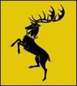
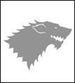
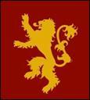
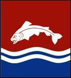
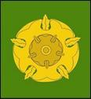
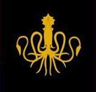
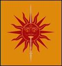
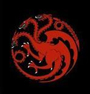

Gia tộc trẻ nhất trong số các Đại Gia Tộc, hình thành trong Cuộc Chiến Chinh Phục. Tổ tiên, ngài Orys Baratheon tương truyền là anh em cùng cha khác mẹ với Aegon Chúa Rồng. Orys từ từ thăng tiến trở thành một trong những tướng chỉ huy có uy quyền nhất của Aegon. Khi ông đánh bại và giết chết Argilac Ngạo Mạn, vị Vua Bão cuối cùng, Aegon đã ban thưởng lâu đài, đất đai và cô con gái của Argilac cho ông. Orys lấy cô gái làm vợ, sử dụng lá cờ, danh tiếng và khẩu quyết của gia đình bà làm của mình.
Gia huy: con hươu đực đen đội vương miện trên nền vàng.
Gia ngôn: Cơn thịnh nộ là của Chúng ta.
VUA ROBERT BARATHEON Đệ Nhất
Vợ, HOÀNG MẬU CERSEI, nhà Lannister
Con cái:
- THÁI TỬ JOFFREY, người thừa kế Ngai Sắt, mười hai tuổi
- CÔNG CHÚA MYRCELLA, thứ nữ tám tuổi
- HOÀNG TỬ TOMMEN, thứ nam tám tuổi
Anh em trai:
- STANNIS BARATHEON, Lãnh chúa đảo Dragonstone
+ Vợ, PHU NHÂN SELYSE nhà Florent
+ Con gái SHIREEN chín tuổi
- RENLY BARATHEON, Lãnh chúa Storrri’s End
Tiểu hội đồng:
- GRAND MAESTER PYCELLE
- LÃNH CHÚA PETYR BAELISH, biệt danh NGÓN ÚT, chủ quản tiền bạc
- LÃNH CHÚA STANNIS BARATHEON, chủ quản tàu bè
- LÃNH CHÚA RENLY BARATHEON, chủ quản luật pháp
- SER BARRISTAN SELMY, Tướng Chỉ Huy Ngự Lâm Quân
- VARYS, thái giám, biệt danh Gián Điệp
Triều thần và tùy tùng:
- SERILYN PAYNE, Vương Pháp, đao phủ
- SANDOR CLEGANE, biệt danh Chó Săn, người bảo vệ thái tử Joffrey
- JANOS SLYNT, thường dân, tướng chỉ huy Đội Gác Thành Vương Đô
- JALABHAR XHO, hoàng tử bị lưu đày khỏi Đảo Summer
- MOON BOY, hề
- LANCEL và TYREK LANNISTER, cận vệ của nhà vua, em họ hoàng hậu
- SER ARON SANTAGAR, thầy dạy kiếm
Ngự Lâm Quân:
- SER BARRISTAN SELMY, Tướng Chỉ Huy
- SER JAIME LANNISTER, biệt danh Sát Vương
- SER BOROS BLOUNT
- SER MERYN TRANT
- SER ARYS OAKHEART
- SER PRESTON GREENFIELD
- SER MANDON MOORE
Những nhà chính thề trung thành với thành Storms End là Nhà Selmy, Wylde, Trant, Penrose, Errol, Estermont, Tarth, Swann, Dondarrion, Caron.
Những nhà chính thề trung thành với đảo Dragonstone là Celtigar, Velaryon, Seaworth, Bar Emmon và Sunglass.

Tổ tiên nhà Stark là Brandon Kiến Thiết và các vị Vua Mùa Đông. Trong hàng ngàn năm, họ trị vì Winterfell trên cương vị Vua Phương Bắc, cho tới khi Torrhen Stark Vua Quỳ Gối chọn thề trung thành với Aegon Chúa Rồng chứ không chiến đấu.
Gia huy: sói tuyết trên nền trắng tinh.
Gia ngôn: Mùa đông đang tới.
EDDARD STARK, Lãnh chúa Winterfell, Thủ lĩnh Phương Bắc
Vợ, PHU NHÂN CATELYN, nhà Tully
Con cái:
- ROBB, người thừa kế thành Winterfell, mười bốn tuổi
- SANSA, trưởng nữ, mười một tuổi
- ARYA, thứ nữ, chín tuổi
- BRANDON, thứ nam, thường gọi Bran, bảy tuổi
- RICKON, thứ nam, ba tuổi
- Con rơi, JON SNOW, mười bốn tuổi
- Con nuôi, THEON GREYJOY, người thừa kế Đảo Sắt
Anh chị em:
- [BRANDON], anh cả, bị giết theo lệnh vua Aerys II Targaryen
- [LYANNA], em gái, chết trên rặng núi xứ Dome
- BENJEN, em trai, thuộc Đội Tuần Đêm,
Người hầu:
- MAESTER LUWIN, quân sư, thầy thuốc, thầy giáo
- VAYON POOLE, quản gia thành Winterfell,
+ JEYNE, con gái, bạn thân của Sansa
- JORY CASSEL, đội trưởng đội lính hộ vệ
+ HALLIS MOLLEN, DESMOND, JACKS, PORTHER, QUENT, ALYN, TOMARD, VARLY, HEWARD, CAYN, WYL, lính hộ vệ
- SER RODRIK CASSEL, thầy dạy kiếm, thường gọi là chú Jory
+ BETH, con gái nhỏ
- SEPTA MORDANE, gia sư cho các cô con gái của Lãnh chúa Eddard
- SEPTON CHAYLE, trông coi điện thờ và thư viện của lâu đài
- HULLEN, chủ trại ngựa
+ Con trai, HARWIN, lính hộ vệ
+ JOSETH, chăm sóc và huấn luyện ngựa
- FARLEN, Chủ trại chó
- GIÀ NAN, người kể chuyện, từng là vú nuôi
+ HODOR, chắt, cậu bé chăm sóc ngựa bị thiểu năng
- GAGE, đầu bếp
- MIKKEN, thự rèn và phụ trách kho vũ khí
Những tướng đồng minh chính:
- SER HELMAN TALLHART,
- RICKARD KARSTARK, Lãnh chúa thành Karhold
- ROOSE BOLTON, Lãnh chúa thành Dreadford
- JON UMBER, biệt danh Greatjon
- GALBART và ROBETT GLOVER
- WYMAN MANDERLY, Lãnh chúa Cảng White
- MAEGE MORMONT, Phu nhân Đảo Bear
Những nhà chính thề trung thành với thành Winterfell là nhà Karstark, Umber, Flint, Mormont, Homwood, Cenvyn, Reed, Manderly, Glover, Tallhart, Bolton.

Tóc vàng, cao ráo và đẹp mã, nhà Lannister mang dòng máu của những người du hành Andal tới từ một vương quốc hùng mạnh trên những ngọn đồi và thung lũng phía tây. Nhà Lannister luôn khoe khoang rằng tổ tiên bên ngoại của họ là Lann Khôn Ngoan, một kẻ lừa đảo sống vào Kỷ Nguyên Những Anh Hùng. Mỏ vàng ở Casterly Rock và Răng Vàng giúp họ trở thành nhà giàu có nhất trong các Đại Gia Tộc.
Gia huy: hình sư tử vàng trên nền đỏ sậm.
Gia ngôn: Nghe Ta Gầm!
TYWIN LANNISTER, Lãnh chúa thành Casterly Rock, Thủ Lĩnh Phương Tây, Người Bảo Vệ Lannisport
Vợ, [PHU NHÂN JOANNA], em họ, chết khi sinh nở
Con cái:
- SER JAIME, biệt danh SÁT VƯƠNG, người thừa kế Casterly Rock, anh song sinh của Cersei
- HOÀNG HẬU CERSEI, vợ vua Robert I Baratheon, em song sinh của Jaime
- TYRION, biệt danh Quỷ Lùn, người lùn
Anh chị em:
- SER KEVAN, em kế sau
+ Vợ, DORNA nhà Swyft
+ Con trai cả, LANCEL, cận vệ nhà vua
+ Cặp song sinh WILLEM và MARTYN
+ Con gái nhỏ, JANEI
- GENNA, em gái, kết hôn cùng Ser Emmon Frey,
+ Con trai, Ser CLEOS FREY
+ Con trai, TYON FREY, cận vệ
- [SER TYGETT], em thứ hai, chết vì bệnh đậu mùa
+ Góa phụ, DARLESSA nhà Marbrand
+ Con trai Tyrek, cận vệ nhà vua
- [GERION], em út, mất tích trên biển
+ Con gái ngoài giá thú, JOY, mười tuổi
Anh họ, SER STAFFORD LANNISTER, em trai phu nhân JOANNA quá cố
- Con gái, CERENNA và MYRIELLA
- Con trai, SER DAVEN LANNISTER
Quân sư, MAESTER CREYLEN
Các hiệp sĩ trưởng và tướng đồng minh:
- LÃNH CHÚA LEO LEFFORD
- SERADDAM MARBRAND
- SER GREGOR CLEGANE, Ngọn Núi Trên Yên Ngựa, hay Núi Yên Ngựa
- SER HARYS SWYFT, cha vợ Ser Kevan
- Lãnh chúa ANDROS BRAX
Những nhà chính thề trung thành với thành Casterly Rock là nhà Payne, Marbrand, Lydden, Banefort, Lefford, Crakehall, Serrett, Broom, Clegane, Prestervà Westerling.
Nhà Arryn có nguồn gốc từ những vị vua vùng Núi và Thung Lũng và là một trong những dòng dõi quý tộc Andal thuần chủng nhất và lâu đời nhất.
Gia huy: hình mặt trăng và chim cắt màu trắng trên nền xanh da trời.
Gia ngôn: Danh dự cao hơn tất thảy.
[JON ARRYN], Lãnh chúa thành Eyrie, Người Bảo Vệ Thung Lũng, Thủ Lĩnh Phương Đông, Quân Sư, mới từ trần.
Vợ cả, [PHU NHÂN JEYNE, nhà Royce] chết khi sinh nở, con gái chết lưu
Vợ thứ, [PHU NHÂN ROWENA, nhà Arryn], em họ, chết vì cảm lạnh, không có con
Vợ thứ và góa phụ, PHU NHÂN LYSA nhà Tully
- Con trai: ROBERT ARRYN, cậu bé yếu ớt sáu tuổi, giờ là Lãnh chúa thành Eyrie và Người bảo vệ Thung Lũng,
Tùy tùng và người hầu:
- MAESTER COLEMON, quân sư, thầy thuốc và gia sư
- SER VARDIS EGEN, đội trưởng đội lính hộ vệ
- SER BRYNDEN TULLY, Cá Đen, Hiệp Sĩ Cổng Thành, chú của phu nhân Lysa
- Lãnh chúa NESTOR ROYCE, Đại Tổng Quản Thung Lũng
+ SER ALBAR ROYCE, con trai
+ MYA STONE, con gái ngoài giá thú hiện đang phục vụ ông
- Lãnh chúa EON HUNTER, ngiròi cầu hôn phu nhân Lysa
- SER LYN CORBRAY, người cầu hôn phu nhân Lysa
+ MYCHEL REDFORT, cận vệ
- PHU NHÂN ANYA WAYNWOOD, góa phụ
+ SER MORTON WAYNWOOD, con trai, người cầu hôn phu nhân Lysa
+ SER DONNEL WAYNWOOD, con trai
- MORD, tay cai ngục cục súc
Những gia đình tiêu biểu thề trung thành với thành Eyrie là nhà Royce, Baelish, Egen, Waynwood, Hunter, Redfort, Corbray, Melcolm và Hersy.

Nhà Tully chưa bao giờ làm vua, dù họ sở hữu những vùng đất màu mỡ và lâu đài lớn tại Riverrun suốt một ngàn năm. Trong cuộc chiến Chinh Phục, vùng châu thổ thuộc về Harren Đen Vua các Đảo. Ông nội Harren, Vua Harwyn Hardhand đã cướp dòng Trident từ Vua Bão Arrec, người mà tổ tiên đã chiếm hết đất đai kéo dài đến Neck từ ba trăm năm trước, giết chết những Hà Bá cuối cùng. Harren là một kẻ bạo chúa hung tàn nên không được lòng dân và rất nhiều lãnh chúa vùng châu thổ sông đã bỏ rơi ông ta để gia nhập đội quân của Aegon. Một trong những người đầu tiên là Edmyn Tully thành Riverrun. Khi Harren và con cháu tuyệt diệt trong trận hỏa hoạn ở Harrenhal, Aegon đã thưởng cho nhà Tully bằng cách ban lệnh phong Edmyn trị vì khắp vùng đất châu thổ và yêu cầu các lãnh chúa vùng châu thổ thề trung thành với ông ta.
Gia huy: hình con cá hồi quẫy nước trên nền xanh lục sọc đỏ.
Gia ngôn: Gia đình, Nhiệm vụ, Danh Dự.
HOSTER TULLY, Lãnh chúa thành Riverrun,
Vợ, [PHU NHÂN MINISA nhà Whent], chết khi lâm bồn
Con cái:
- CATELYN, trưởng nữ, kết hôn cùng Lãnh chúa Eddard Stark
- LYSA, thứ nữ, kết hôn cùng Lãnh chúa Jon Arryn
- SER EDMURE, người thừa kế Riverrun
Em trai, SER BRYNDEN, biệt danh Cá Đen
Người hầu:
- MAESTERVYMAN, quân sư, thầy thuốc, gia sư
- SER DESMOND GRELL, thầy dạy kiếm
- SER ROBIN RYGER, đội trưởng đội lính hộ vệ
- UTIIERYDES WAYN, quản gia thành Riverrun
Các hiệp sĩ và tướng đồng minh:
- JASON MALLISTER, Lãnh chúa thành Seagard
+ PATREK MALLISTER, con trai và người thừa kế
+ WALDER FREY, Lãnh chúa vùng Crossing
+ Vô số con trai, cháu trai và con hoang
- JONOS BRACKEN, Lãnh chúa thành Stone Hedge
- TYTOS BLACKWOOD, Lãnh chúa thành Reventree
- SER RAYMUN DARRY
- SER KARYL VANCE
- SER MARQ PIPER
- SHELLA WHENT, Phu nhân thành Harrenhal
+ SER WILLIS WODE, hiệp sĩ phục vụ
Các nhà chính thề trung thành với thành Riverrun là nhà Darry, Frey, Mallister, Bracken, Blackwood, Whent, Ryger, Piper và Vance.

Nhà Tyrell bắt đầu từ vai trò quản gia cho Vua xứ Reach, vốn thống trị những vùng đồng bằng trù phú từ phía tây nam rặng Dornish và Xoáy Nước Đen tới Bờ biển Hoàng Hôn. Họ tuyên bố tổ tiên bên ngoại của họ là Garth Greenhand, vua làm vườn của Tiền Nhân, người đội vương miện dây leo và hoa, làm cho đất đai trù phú. Khi Vua Mern, vị vua cuối cùng của Triều đại cũ chết trong trận Cánh Đồng Cháy, quản gia Harlen Tyrell đã giao nộp Highgarden cho Aegon Targaryen và cầu xin được thề trung thành với ngài. Aegon trao lâu đài cùng quyền cai trị xứ Reach cho ông.
Gia huy: hình bông hồng vàng trên nền xanh lá cây.
Gia ngôn: Sinh trưởng mạnh mẽ.
MACE TYRELL, Lãnh chúa thành Highgarđen, Thủ Lĩnh Phương Nam, Người Bảo Vệ Rặng Marches, Đại Nguyên Soái vùng Reach.
Vợ, PHU NHÂN ALERIE nhà Hightower thuộc Oldtown
Con cái:
- WILLAS, con gái cả, người thừa kế Highgarden
- SER GARLAN, biệt danh Gallant, con gái thứ
- SER LORAS, Hiệp sĩ Flowers, con trai út
- MARGAERY, con gái, mười bốn tuổi
Mẹ, góa phụ, PHU NHÂN OLENNA nhà Redwyne, biệt hiệu Nữ Hoàng Gai
Chị em gái:
- MINA, kết hôn cùng Lãnh chúa Paxter Redwyne
- JANNA, kết hôn cùng Ser Jon Fossoway
Chú bác:
- GARTH, biệt danh Gớm Ghiếc, Tổng quản thành Mighgarden
+ Những người con trai ngoài giá thú, GARSE và GARRETT FLOWERS
- SER MORYN, Tướng Chỉ Huy đội Gác Oldtown
- MAESTER GORMON, học giả tại Citadel
Người hầu:
- MAESTER LOMYS, quân sư, thầy thuốc, gia sư
- IGON VYRWEL, đội trưỏng đội lính hộ vệ
- SER VORTIMER CRANE, thầy dạy kiếm
Hiệp sĩ và tướng đồng minh:
- PAXTER REDWYNE, Lãnh chúa thành Abor
+ Vợ, PHU NHÂN MINA nhà Tyrell
+ Con
+ SER HORAS, bị gọi giễu là Kinh Hoàng, anh sinh đôi của Hobber
+ SER HOBBER, bị gọi giễu là Cẩu Thả, em sinh đôi của Horas
+ DESMERA, mười lăm tuổi
- RANDYLLTARLY, Lãnh chúa Đồi Hom
+ SAMWELL, con cả, thuộc Đội Tuần Đêm
+ DICKON, con thứ, thừa kế Đồi Hom
- ARWYN OAKHEART, Phu Nhân vùng Old Oak
- MATHIS ROWAN, Lãnh chúa Goldengrove
- LEYTON HIGHTOWER, Tiếng nói của Oldtown, Lãnh chúa vùng Cảng
- SERJONFOSSOWAY
Một số nhà chính thề trung thành với Highgarden là Vywel, Florent, Oakheart, Hightower, Crane, Tarly, Redwyne, Rowan, Fossoway và Mullendore.

Nhà Greyjoy tuyên bố tổ tiên họ là Vua Xám của Kỷ Nguyên Những Anh Hùng. Truyền thuyết kể rằng vua Xám không chỉ trị vì những hòn đảo phía tây mà còn cả biển khơi và lấy nhân ngư làm vợ.
Trong hàng ngàn năm, những tay cướp biển tới từ Quần đảo Sắt - những nạn nhân bị cướp bóc gọi chúng là "người sắt" - là mối kinh hoàng trên vùng biển từ Cảng Ibben cho tới Đảo Summer. Họ tự hào vì sự dũng mãnh trên chiến trường và sự tư do tín ngưỡng. Mỗi hòn đảo có một "vua muối" và "vua đá" riêng. Đại Vương của Quần Đảo lần lượt được chọn trong số các vị tiểu vương này, cho tới khi Vua Urron chiếm ngai bằng cách giết sạch những vua khác khi họ họp nhau lại để chọn vua. Dòng dõi vua Urron đã tuyệt diệt một ngàn năm trước, khi người Andal tràn qua quần đảo. Nhà Greyjoy cũng như các chúa đảo khác đã phối hôn cùng những kẻ xâm chiếm.
Những Vua Sắt đã mở rộng sự trị vì của mình lên tận đất liền bằng lửa và kiếm. Vua Qhored khoe khoang rằng "bất cứ nơi nào ngưòi ta ngửi thấy mùi nước biển và nghe tiếng sóng vỗ" thì đó là thuộc địa của ông ta. Trong những thế kỷ sau, những con cháu của Qhored mất vùng Arbor, Oldtown, Đảo Bear và rất nhiều phần bờ biển phía tây. Nhưng tới Cuộc Chiến Chinh Phục, Vua Harren Đen đã chiếm được tất cả đất đai giữa những ngọn núi, từ Neck cho tới Xoáy Nước Đen. Khi Harren cũng những người con trai bị tiêu diệt cùng sự sụp đổ của Harrenhal, Aegon Targaryen đã trao vùng châu thổ sông cho Nhà Tully, đồng thời cho phép những lãnh chúa sống sót của Quần Đảo Sắt được theo tập tục cũ chọn ra vị vua trong số họ. Họ đã chọn Lãnh chúa Vickon Greyjoy của thành Giáo.
Gia huy: hình con thủy quái màu vàng trên nền đen.
Gia ngôn: Chúng ta không gieo gió.
BALON GREYJOY, Lãnh chúa Quần Đảo Sắt, Vua Cát và Đá, Con trai của Gió Biển, Thần Chết của thành Giáo
Vợ, PHU NHÂN ALANNYS nhà Harlaw
Con cái:
- [RODRIK] con cả, chết tại Seagard trong Cuộc Nổi Loạn của nhà Greyjoy
- [MARON] con thứ hai, chết trên tường thành Giáo trong Cuộc Nổi Loạn của nhà Gneyjoy
- ASHA, con gái, thuyền trưởng tàu Gió Đen
- THEON, con trai độc nhất còn sống sót, thừa kế thành Giáo, con nuôi Lãnh chúa Eddard Stark
Em trai:
- EURON, biệt danh Mắt Quạ, thuyền trường tàu Im lặng, một kẻ sống ngoài pháp luật, cướp biển
- VICTARION, Đô Đốc Hạm Đội Sắt
- AERON, biệt danh Damphair, tu sĩ dòng Thần Chết Chìm
Những gia đình nhỏ hơn thề trung thành với thành Giáo là Harlaw, Stonehouse, Merlyn, Sunderly, Botley, Tavvney, Wynch, Goodbrother.

Nymeria, nữ hoàng chiến binh người Rhoyne đã mang mười ngàn thuyền cập cảng xứ Dorne nằm ở phía đông nam Bảy Phụ Quốc, sau đó kết hôn cùng Lãnh chúa Mors Martell. Với sự giúp đỡ của bà, ông đã đánh bại kẻ thù và thống trị toàn xứ Dorne. Sức ảnh hưởng của văn hóa Rhoyne còn khá mạnh mẽ. Vì thế những người trị vì xứ Dorne thích xưng là "Hoàng tử" hơn là "Vua." Theo luật của xứ Dorne, đất đai và danh hiệu được truyền lại cho con cả chứ không phải con trai trưởng. Dorne, khác với những phần khác của Bảy Phụ Quốc, chưa bao giờ bị Aegon Chúa Rồng xâm lăng. Mãi hai trăm năm sau đó nó mới vĩnh viễn hợp nhất với toàn vương quốc bằng hôn nhân và các thỏa thuận, chứ không phải bằng vũ lực. Vua Daeron II Hòa Bình đã làm được điều những chiến binh không làm được khi kết hôn cùng công chúa xứ Dorne Myriah và cho em gái mình lấy hoàng tử đang trị vì xứ Dorne lúc bây giờ.
Gia huy: hình mặt trời đỏ bị mũi giáo vàng xuyên qua.
Gia ngôn: Không cúi đầu, không quỳ gối, không thất bại.
DORAN NYMEROS MARTELL, Lãnh chúa Mũi giáo vàng, Hoàng tử xứ Dorne
Vợ, MELLARIO, thành phố tự trị Norvos
Con cái:
- Công chúa ARIANNE, trưởng nữ, người thừa kế thành Mũi Giáo Vàng
- Hoàng tử QUENTYN, trưởng nam
- Hoàng tử TRYSTANE, thứ nam
Anh chị em:
- Em gái, [CÔNG CHÚA ELIA] kết hôn cùng hoàng tử RhaegarTargaryen, bị giết chết trận Chiếm Vương Đô
Con cái:
+ [CÔNG CIIÚA RHAIiNYS] một cô bé, bị giết chết trong trận Chiếm Vương Đô
+ [HOÀNG TỬ AEGON] một đứa bé, bị giết chết trong trận Chiếm Vương Đô
- Em trai, HOÀNG TỬ OBERYN, Rắn Hổ Mang Đỏ
Tùy tùng:
- AREO HOTAH, lính đánh thuê thành Norvos, đội trưởng đội lính hộ vệ
- MAESTER CALEOTTE, quân sư, thầy thuốc, sư gia - Các lãnh chúa và tướng đồng minh:
+ EDRIC DAYNE, Lãnh chúa thành Sao Băng
Những nhà chính thề trung thành cùng thành Mũi Giáo Vàng bao gồm Jordayne, Santagar, Allyrion, Toland, Yronwood, Wyl, Fowler, Dayne.

Nhà Targaryen mang dòng máu của rồng, con cháu của các lãnh chúa cao quý thời xa xưa từng trị vị Valyria, họ mang một vẻ đẹp choáng ngợp (nhiều người nói vẻ đẹp đó không giống con người), với đôi mắt màu tử đinh hương, màu chàm hoặc tím và mái tóc màu vàng ánh bạc hoặc bạch kim.
Những tổ tiên của Aegon Chúa Rồng đã trốn thoát khỏi vụ Sụp Đổ của Valyria cùng những hỗn loạn và nạn chém giết sau đó trên đảo Dragonstone, một hòn đảo đá nằm trên eo biển. Từ chính nơi này Aegon cùng những người chị em gái là Visenya và Rhaenys đã đi thuyền tới đánh chiếm Bảy Phụ Quốc. Để bảo vệ dòng máu hoàng thất thuần chủng, Nhà Targaryen thường theo truyền thống của người Valyria cho phép kết hôn giữa anh em gái. Aegon đã lấy hai chị em gái của mình và có với một người vài người con trai.
Gia huy: hình rồng ba đầu màu đỏ trên nền đen, ba đầu đó tượng trưng cho Aegon và các chị em gái.
Gia ngôn: Lửa và Máu
Các Vương Triều Targaryen sau khi Aegon cập bến
1-37
Aegon I
Aegon Đại Đế, Aegon Chúa Rồng
37-42
Aenys I
Con trai Aegon và Rhaenys
42-48
Maegor I
Maegon Bạo Chúa, con trai AEgon và Visenya
48-103
Jaehaerys I
Vị Vua Già, người hòa giải, con trai Aenys
103-129
Viserys I
Cháu nội Jaehaerys
129-131
Aegon II
Con trai cả của Viserys
[Tất cả những cống hiến của vua Aegon II đều bị chị gái Rhaenyra, hơn ngài một tuổi tranh giành. Cả hai đều hy sinh trong cuộc bất hòa giữa họ, được các ca sĩ gọi là Vũ Điệu của Loài Rồng]
131-157
Aegon III
Thuốc Độc của Loài Rồng, Con trai Rhaenyria
[Những con rồng cuối cùng đã chết trong thời kỳ trị vì của Aegon III]
157-161
Daeron I
Con Rồng Trẻ, Vị Vua Bé, con trai cả của Aegon III
[Daeron chinh phục được xứ Dorne nhưng không thể giữ được nỏ, chết trẻ]
161-171
Baelon I
Vị Vua Được Chúc Phúc, thầy tu và nhà vua, con trai thứ hai của Aegon III
171-172
Viserys II
Em trai Aegon III
172-184
Aegon IV
Vô Dụng, con trai cả của Viserys
[Em trai ngài, Hoàng tử Aemon Hiệp sĩ Rồng, là người bảo vệ và nghe đồn là tình nhân của Hoàng hậu Naerys]
184-209
Daeron II
Con trai Hoàng Hậu Naerys, con trai Aegon hoặc Aemon [Daeron đã biến xứ Dome thành một phần của vương quốc nhờ kết hôn cùng công chúa xứ Dorne Myriah]
209-221
Aerys I
Con trai thứ hai của Daeron II [sử sách không ghi chép]
221-233
Maekar I
Con trai thứ tư của Deron II
233-259
Aegon V
Khác Thường, con trai thứ tư của Maekar
259-262
Jaehaerys II
Con trai thứ hai của Aegon Khác Thường
262-283
Aerys II
Vua Điên, con trai duy nhất của Jaehaerys
Những người nhà Targaryen cuối cùng
[VUA AERYS TARGARYEN], Aerys Đệ Nhị, bị Jaime Lannister giết chết trong trận Chiếm Vương Đô
Chị và em gái [HOÀNG HẬU RHAELLA] Nhà Targaryen, chết khi sinh nở tại Dragonstone
Con cái:
- [THÁI TỬ RHAEGAR], Thừa kế Ngai Sắt, chết dưới tay Robert Baratheon trong trận Trident
- Vợ, [CÔNG CHÚA ELIA] Nhà Martell, chết trong trận Chiếm Vưong Đô
- Con cái:
+ [CÔNG CHÚA RHAENYS] một cô bé, bị giết chết trong trận Chiếm Vương Đô
+ [PRINCE AEGON], một bé trai, bị giết chết trong trận Chiếm Vương Đô
- HOÀNG TỬ VISERYS, tự xưngViserys Đệ Tâm, Đại Vương của Bảy Phụ Quốc, bị gọi là Vua Ăn Mày
- CÔNG CHÚA DAENERYS, biệt hiệu Daenerys Bão Tố, mười ba tuổi